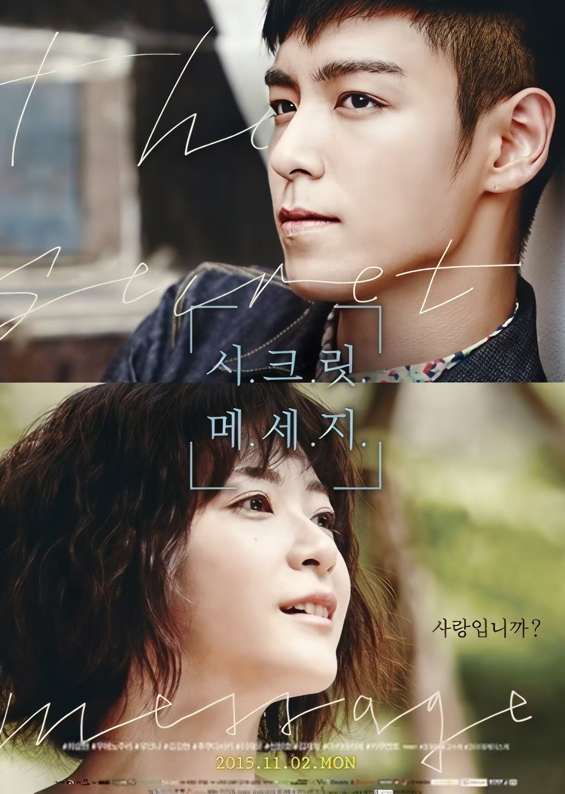

TOP 2015年
2015年2月5日
TOP接受了《中央日报》的采访
详细资讯： Korea JoongAng Daily
- TOP：我最初拒绝艺术是因为我感到成为画家的压力，因为我家里的女性成员都毕业于艺术学校。但后来我改变了主意。回首往事，我意识到我一直都喜欢看艺术。我也喜欢时尚，从 13 岁开始收集运动鞋
2015年5月17日
TOP 在 Singapore Entertainment Awards 被提名：
- Most Popular K-pop Music Video: Doom Dada
详细资讯： Wikipedia


2015年12月27日
TOP 被 TC Candler 评选为：
- The 100 Most Handsome Faces of 2015：排名第8